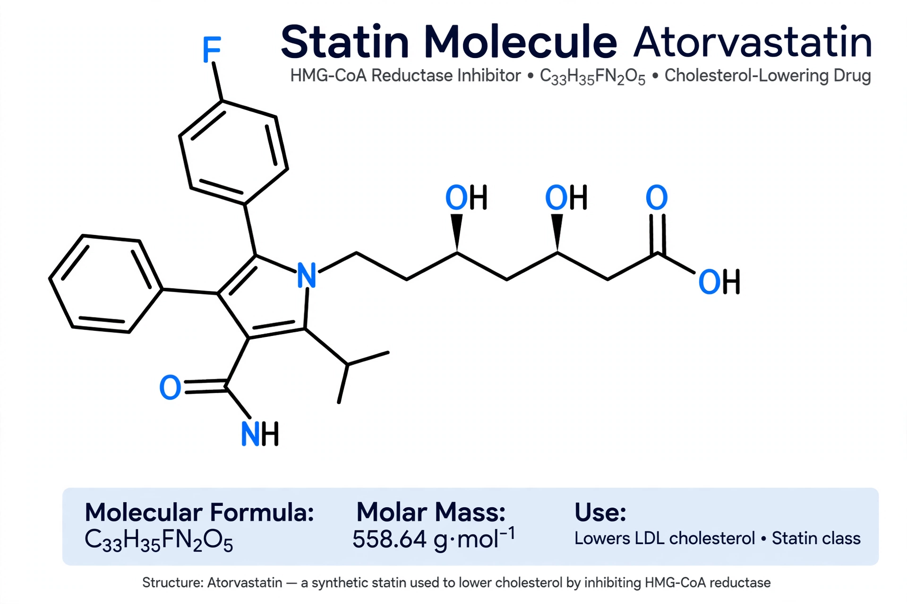

Statins (also known as HMG-CoA reductase inhibitors) are a class of lipid-lowering medications that reduce illness and mortality in people at high risk of cardiovascular disease. They are among the most commonly prescribed drugs worldwide. Statins lower blood cholesterol — particularly low-density lipoprotein (LDL) cholesterol — and are a cornerstone treatment for hypercholesterolemia.

| Statins | |
|---|---|
| Drug class | HMG-CoA reductase inhibitors |
| Mechanism | Inhibit HMG-CoA reductase in the mevalonate pathway |
| Main effect | Lower LDL cholesterol; modestly raise HDL |
| First member | Mevastatin (1976); lovastatin approved 1987 |
Statins competitively inhibit HMG-CoA reductase, the rate-limiting enzyme of the mevalonate pathway that produces cholesterol in the liver. Reduced hepatic cholesterol synthesis causes liver cells to upregulate LDL receptors, pulling more LDL cholesterol out of the bloodstream. Statins also have modest anti-inflammatory and plaque-stabilising ("pleiotropic") effects.
| Statin | Origin | Relative potency |
|---|---|---|
| Atorvastatin | Synthetic | High |
| Rosuvastatin | Synthetic | High |
| Simvastatin | Fermentation-derived | Moderate |
| Pravastatin | Fermentation-derived | Moderate |
| Lovastatin | Natural (fungal) | Lower |
| Fluvastatin | Synthetic | Lower |
| Pitavastatin | Synthetic | Moderate–high |
Statins are prescribed for primary prevention of cardiovascular events in people with elevated risk, and for secondary prevention after heart attack or stroke. Large meta-analyses show that each 1 mmol/L reduction in LDL cholesterol reduces major vascular events by roughly one fifth. Guidelines from bodies such as the American College of Cardiology and NICE recommend statins based on overall cardiovascular risk rather than cholesterol level alone.
Most people tolerate statins well. The most common complaint is muscle pain (myalgia); serious muscle injury (rhabdomyolysis) is rare. Statins slightly increase the risk of developing type 2 diabetes and can raise liver enzymes. They interact with drugs that inhibit the CYP3A4 enzyme, such as some antibiotics and grapefruit juice. Unlike steroid drugs, statins have no hormonal activity.
In the 1970s the Japanese biochemist Akira Endo isolated mevastatin from the fungus Penicillium citrinum, the first HMG-CoA reductase inhibitor. Merck developed lovastatin, approved by the FDA in 1987. The landmark Scandinavian Simvastatin Survival Study (4S, 1994) demonstrated a clear mortality benefit, cementing statins as a mainstay of preventive cardiology.